0% completed
Peer-to-Peer Architecture
On This Page
Know the Vocabulary
Part 1: What the Pattern Is
The Definition
The Problem It Solves
Part 2: Core Concepts
Peers
The Overlay Network
Churn
The Bootstrap Problem
Part 3: The Three Generations of P2P
Generation 1: Centralized Index (Napster)
Generation 2: Unstructured Overlays (Gnutella)
Generation 3: Structured Overlays (Distributed Hash Tables)
Part 4: Distributed Hash Tables
The Core Idea
Chord: Routing on a Ring
Kademlia: Routing by XOR Distance
What a DHT Stores
Part 5: Data Transfer and Replication
Chunking and Parallel Download
Piece Selection and Incentives
Replication Under Churn
Part 6: Connectivity: NAT Traversal
Part 7: Consistency, Trust, and Security
Consistency
Threats Specific to P2P
Part 8: Production Systems
Part 9: Advantages and Limitations
Advantages
Limitations
Part 10: When to Use It
FAQs
Key Takeaways
Peer-to-peer architecture removes the central server from a distributed system. It exists because the client-server model has a center that someone must pay for and protect. There is a load balancer, an application tier, a database. Clients ask and servers answer, and capacity is something the operator buys: when traffic grows, you add servers and pay for them.
Peer-to-peer inverts this.
There is no privileged server. Every participant, called a peer, is simultaneously a consumer and a provider of resources. When a new user joins a BitTorrent swarm, the newcomer brings upload bandwidth along with their download demand, so the swarm does not slow down the way a single server would. Capacity scales with demand, and the operator's bill does not.
This property is why peer-to-peer architecture underlies some of the most resilient and widely used systems ever built. BitTorrent moves a meaningful share of internet traffic, and Bitcoin and Ethereum coordinate global financial state without any central authority. IPFS stores content addressed by what it is rather than where it lives, and early Skype carried voice calls across millions of home machines. Even systems that are not purely peer-to-peer borrow its techniques.
Cassandra, Riak, and Amazon's original Dynamo system (not the DynamoDB service) place data on the same kind of consistent hashing ring that structured P2P overlays such as Chord use. Some video platforms also use peer assistance to deliver video.
Understanding the pattern means understanding what it buys (scalability without central cost, resilience without central failure points) and what it charges (hard discovery, hard consistency, hard security, and unpredictable performance). This lesson covers all of it from first principles.
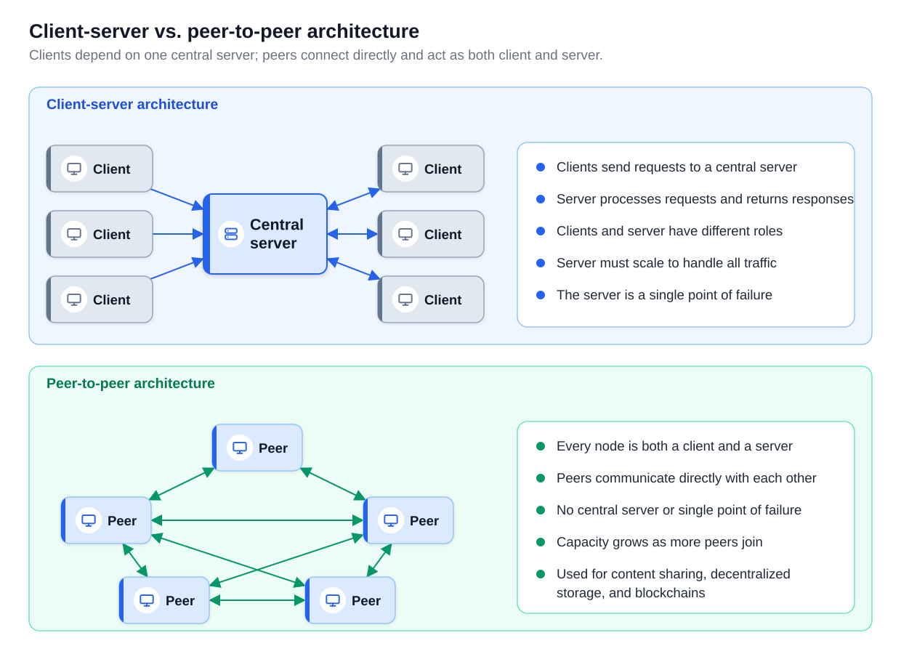
Know the Vocabulary
This lesson uses the terms below repeatedly. Read them once now and return here when a later section needs one.
- Peer: A participant that is both a client and a server to the others, requesting and supplying resources such as bandwidth or storage.
- Overlay network: The logical network of peer-to-peer connections built on top of the physical internet.
- Single point of failure: A component whose failure stops the whole system, such as a central server that every client depends on.
- Churn: The continuous joining and leaving of peers, which changes where data lives and how lookups are routed.
- Bootstrap node: A well-known peer that a new peer contacts first to join the overlay network.
- Flooding: A search in which a peer asks its neighbors, who ask their neighbors, until the query finds a match or reaches its hop limit (the time-to-live).
- Distributed hash table (DHT): A key-value lookup spread across all peers with no central node. Peers and keys share one identifier space, and each peer is responsible for the keys closest to its own identifier.
- Routing table: The peers that a peer knows, chosen so that each forwarded query gets closer to its target. Chord calls it a finger table, and Kademlia groups it into buckets.
- Consistent hashing: Placing keys and nodes on the same ring, so that adding or removing a node moves only the keys in one neighbor's range.
- Free riding: Downloading from other peers without uploading to them. BitTorrent discourages it with tit-for-tat, which uploads first to the peers that upload in return.
- Network address translation (NAT): A home router function that shares one public address among many devices and blocks unsolicited inbound connections.
- TURN relay: A server that forwards traffic between two peers that cannot connect directly, at a bandwidth cost to whoever runs it.
- Content addressing: Identifying data by the hash of its content instead of by its location, so any peer can verify any copy.
- Consensus protocol: A protocol by which peers agree on one ordered history, such as a ledger, without a trusted party. Bitcoin's proof of work is one example.
- Gossip: Spreading information by having each node pass it to a few random peers, which pass it on until every node has it.
Part 1: What the Pattern Is
The Definition
Peer-to-peer architecture is a distributed architecture in which participants, called peers, have equivalent roles and privileges. Each peer both requests and supplies resources such as bandwidth, storage, or computation.
Peers communicate directly with each other rather than through a central coordinator, and together they form an overlay network: a logical network of peer-to-peer connections built on top of the physical internet.
Three properties define the pattern.
-
Symmetry of roles. In client-server, the roles are fixed and unequal. In peer-to-peer, any peer can play either role at any moment. A peer downloading a file is also serving the pieces it already has to others.
-
Decentralized control. No single node decides what the system does. Routing, storage, and coordination decisions are made by peers using local information and agreed protocols. Removing any one peer, including the original creator of the network, does not stop the system.
-
Self-scaling resources. Each new peer contributes resources as well as consuming them. Total capacity grows with the number of participants, which is the economic advantage that made the pattern famous.
The Problem It Solves
Client-server has a structural cost problem for popular content.
If a million users download the same 4 GB file from one server, the operator must provision for roughly 4 petabytes of egress, and the server is a single point of failure and a single target for attack. The cost grows linearly with popularity, which is the opposite of what a successful product wants.
Peer-to-peer breaks the link between popularity and cost.
If those million users each upload pieces to each other, the origin seeds the file once or a few times, and the crowd carries the rest. Popularity becomes a source of capacity instead of a source of load.
The pattern also solves a trust and control problem.
When no single party should be able to censor, alter, or shut down a system, as with a public ledger or a censorship-resistant file store, removing the center is the only structural way to remove the point of control.
Part 2: Core Concepts
Peers
A peer is any participating node. In practice, peers are not equal in capability even when equal in role.
A peer on a home connection with a 10 Mbps uplink behaves very differently from a peer on a data center server. Real systems account for this heterogeneity, as discussed in the hybrid models below.
Each peer typically maintains three things: a local store of the resources it holds, a list of neighbor peers it is connected to, and a routing or lookup mechanism for finding resources it does not hold.
The Overlay Network
The overlay network is the logical graph formed by peers and their connections.
Two peers adjacent in the overlay may be on opposite sides of the planet in the physical network.
The overlay topology determines how efficiently lookups and transfers work, which is why most of the design effort in P2P goes into shaping and maintaining it.
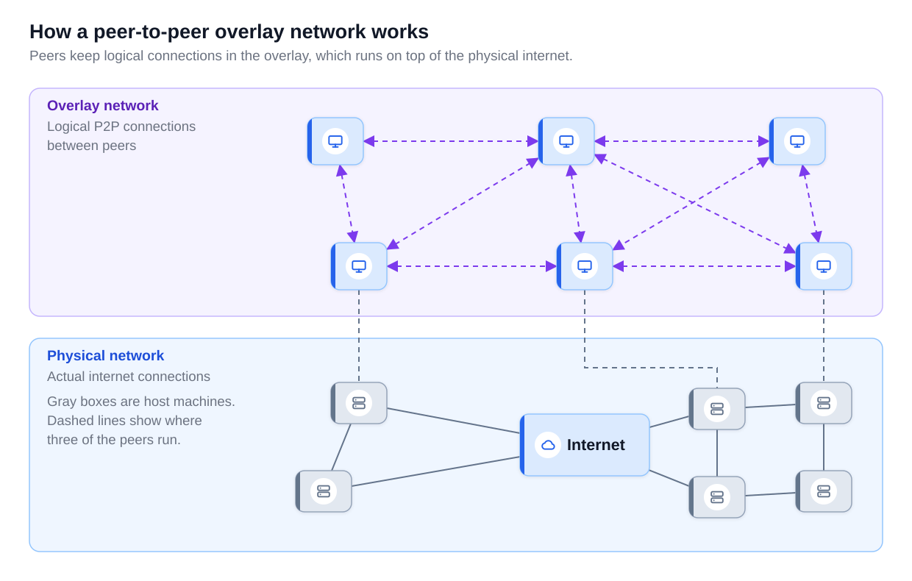
Churn
Churn is the continuous joining and leaving of peers.
In a client-server system, servers are stable and clients come and go without affecting the system.
In peer-to-peer, the peers are the system, so churn directly changes where data lives and how routes work.
Studies of deployed P2P networks have shown median session lengths measured in minutes to hours.
A design that assumes peers stay online is a design that fails.
Churn is the central engineering reality of the pattern.
Replication, routing table maintenance, and incentive mechanisms all exist primarily to keep the system correct while its membership constantly changes.
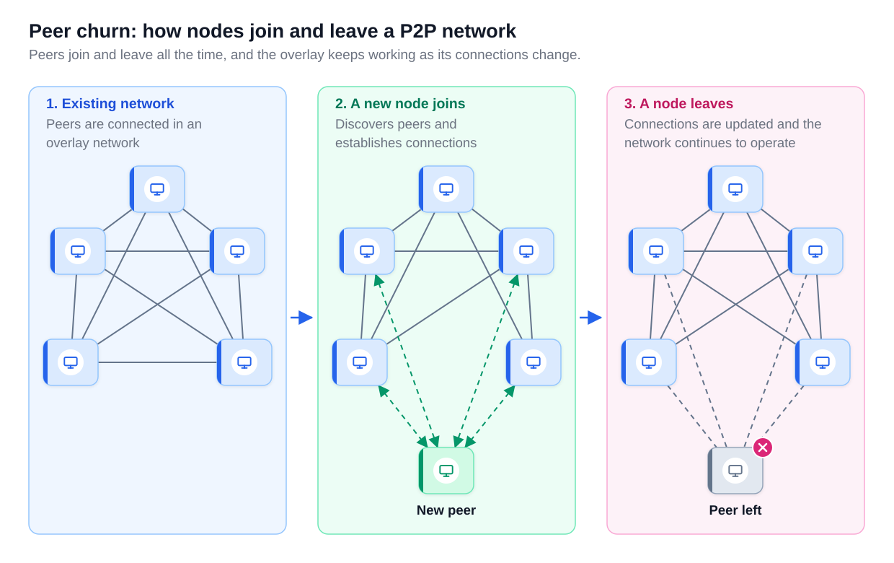
The Bootstrap Problem
A new peer has to find at least one existing peer to join the overlay. Without a central directory, how does it do that?
Practical systems accept a small amount of central help: they ship with a list of well-known bootstrap nodes, use DNS seeds that return addresses of likely-online peers, or use trackers. This is worth noticing: even the most decentralized systems usually have a small centralized or semi-centralized entry point.
The key is that it is used only for joining, not for ongoing operation, so its failure degrades onboarding but does not stop the running network.
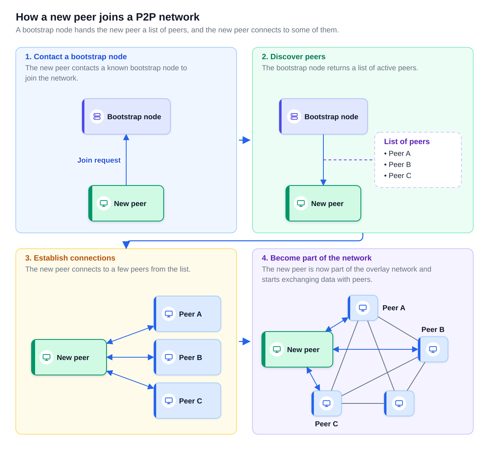
Part 3: The Three Generations of P2P
Generation 1: Centralized Index (Napster)
Napster is the historical starting point and is technically a hybrid.
Peers stored the files and transferred them directly to each other, but a central server maintained the index of who had what.
Search was fast and simple, because it was one lookup against one database.
The weakness was that the central index was both a legal target and a single point of failure. Shutting down the index shut down the network, which is exactly what happened when a court order forced Napster offline.
Napster demonstrated that peer-to-peer transfer works but that a central index undermines the point of decentralization.
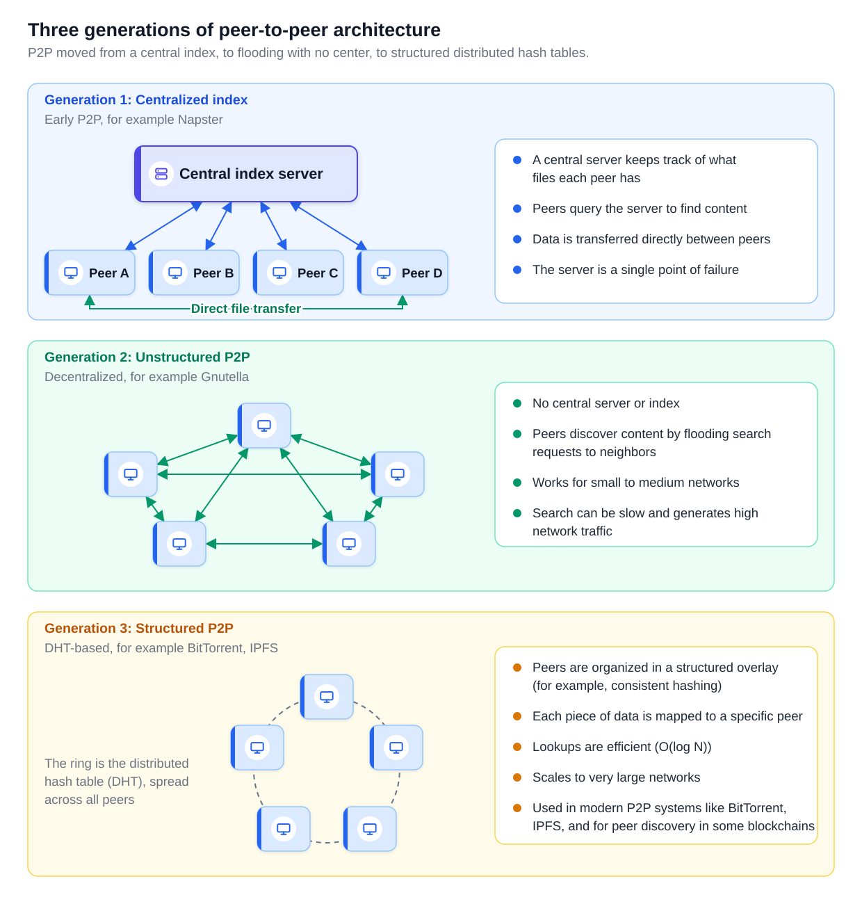
Generation 2: Unstructured Overlays (Gnutella)
Gnutella removed the central index.
Peers connected to a handful of random neighbors, and search worked by flooding: a peer asked its neighbors, who asked their neighbors, up to a limited number of hops (the time-to-live), until the query found a match or expired.
Flooding is robust, because there is no structure to break, and it finds popular items quickly, since many nearby peers hold copies. But it scales badly. Each query generates traffic proportional to the number of peers reached, so total network load grows faster than the network.
Rare items could be missed entirely if they sat beyond the hop limit.
Later improvements added superpeers (more capable peers that index their neighbors' content) and random walks instead of floods, which reduced traffic but showed that pure unstructured search has hard limits.
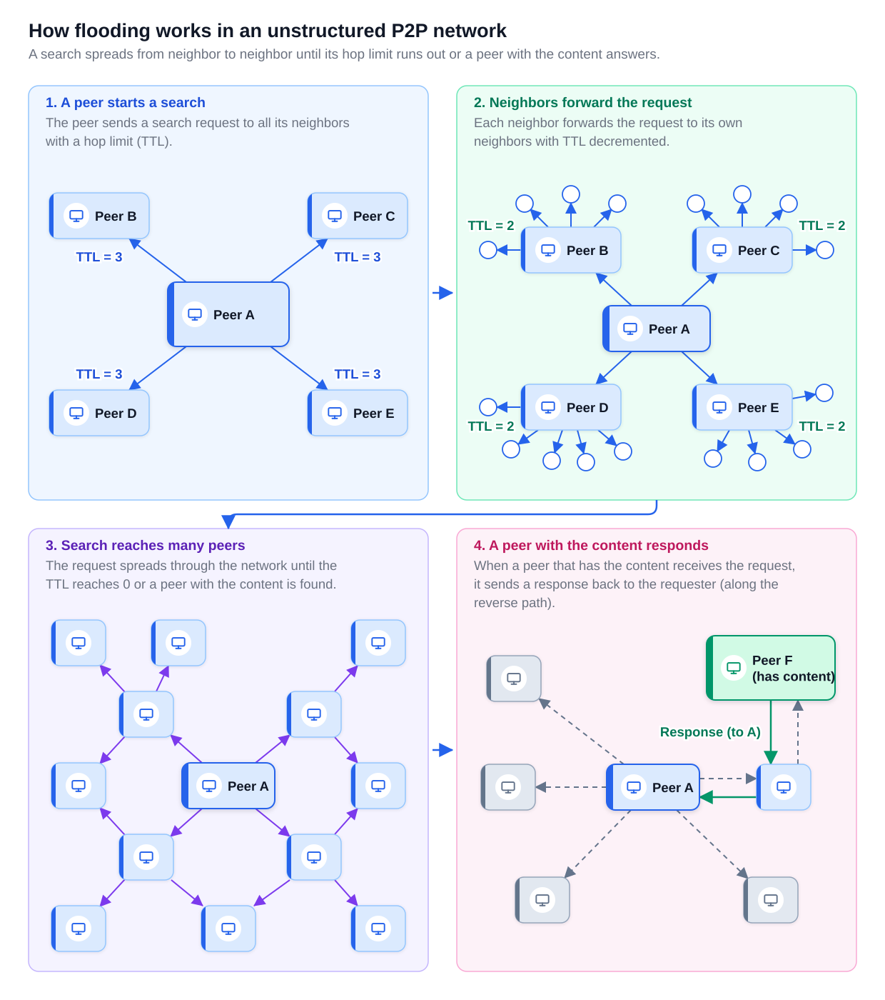
Generation 3: Structured Overlays (Distributed Hash Tables)
Structured overlays solve lookup deterministically. Instead of asking around, peers organize themselves so that any key can be located in a small, predictable number of hops, typically logarithmic in network size.
The dominant mechanism is the Distributed Hash Table, covered in the next part.
The trade-off is that structure is maintained work.
The overlay must repair itself as peers churn, and structured overlays handle exact-match lookups well but are poor at fuzzy or keyword search, which is why many real systems combine a DHT for location with other mechanisms for search.
Part 4: Distributed Hash Tables
The Core Idea
A DHT provides a hash table interface (put a key and value, get a value by key) spread across all peers with no central node. Both peers and keys are mapped into the same identifier space using a hash function. Each peer becomes responsible for the keys closest to its own identifier under some distance metric.
To find a key, you route toward the peer whose identifier is closest to it.
Because the hash function spreads keys uniformly, responsibility is spread roughly evenly across peers, and because routing is deterministic, any lookup takes a bounded number of hops. Random identifiers still leave some peers with larger ranges than others, so many systems give each physical node several identifiers (virtual nodes) to smooth out the imbalance.
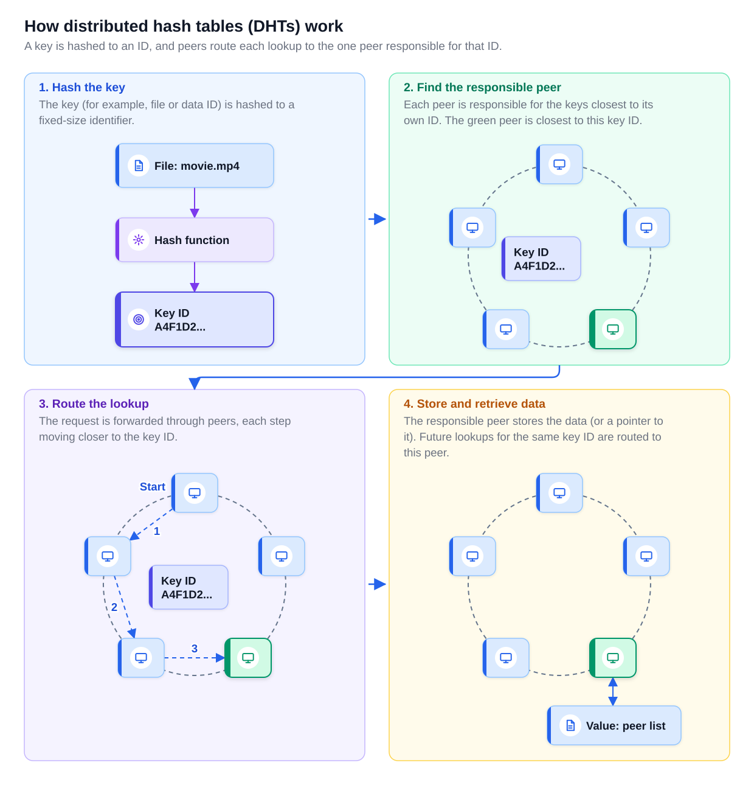
Chord: Routing on a Ring
Chord arranges identifiers on a circle. Each peer owns the keys between its predecessor's identifier and its own. Each peer keeps a finger table: pointers to peers at exponentially increasing distances around the ring (halfway across, a quarter across, an eighth, and so on).
To look up a key, a peer forwards the query to the finger that gets closest to the target without passing it. Each hop at least halves the remaining distance, so lookups complete in O(log N) hops.
Adding or removing a peer only moves the keys in one neighbor's range, which is the same consistent hashing property that Dynamo, Cassandra, and many caches use.
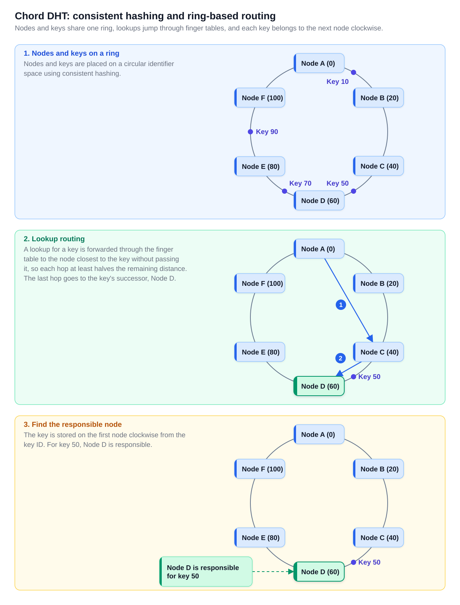
Kademlia: Routing by XOR Distance
Kademlia, used by BitTorrent's mainline DHT, Ethereum's peer discovery, and IPFS, defines distance between two identifiers as their bitwise XOR. This metric is symmetric, which means peers learn useful routing information from the queries they receive, not just the ones they send.
Each peer keeps buckets of known peers grouped by how many leading bits they share with its own identifier.
Lookups proceed iteratively: ask the closest known peers for even closer peers, repeat until no closer peer is returned.
A short example with 4-bit identifiers shows how each step gets closer. Node A (1001) wants key 1110, and its own distance to the key is 1001 XOR 1110 = 0111, which is 7. A first asks Peer 1 (1010), a contact from its routing table. Peer 1 is at distance 1010 XOR 1110 = 0100, which is 4.
Peer 1 replies with two peers it knows that are closer still: 1100 at distance 0010 (2) and 1110 at distance 0000 (0). A queries both, and node 1110 is at distance 0, so no closer peer exists and the lookup ends. The distance to the key fell from 7 to 4 after the first step and to 0 after the second.
Lookups take O(log N) hops, and the structure tolerates churn well because buckets prefer long-lived peers, which statistically are likely to stay online.
Redundancy is built in, since each bucket holds several contacts and queries go out to several peers in parallel.
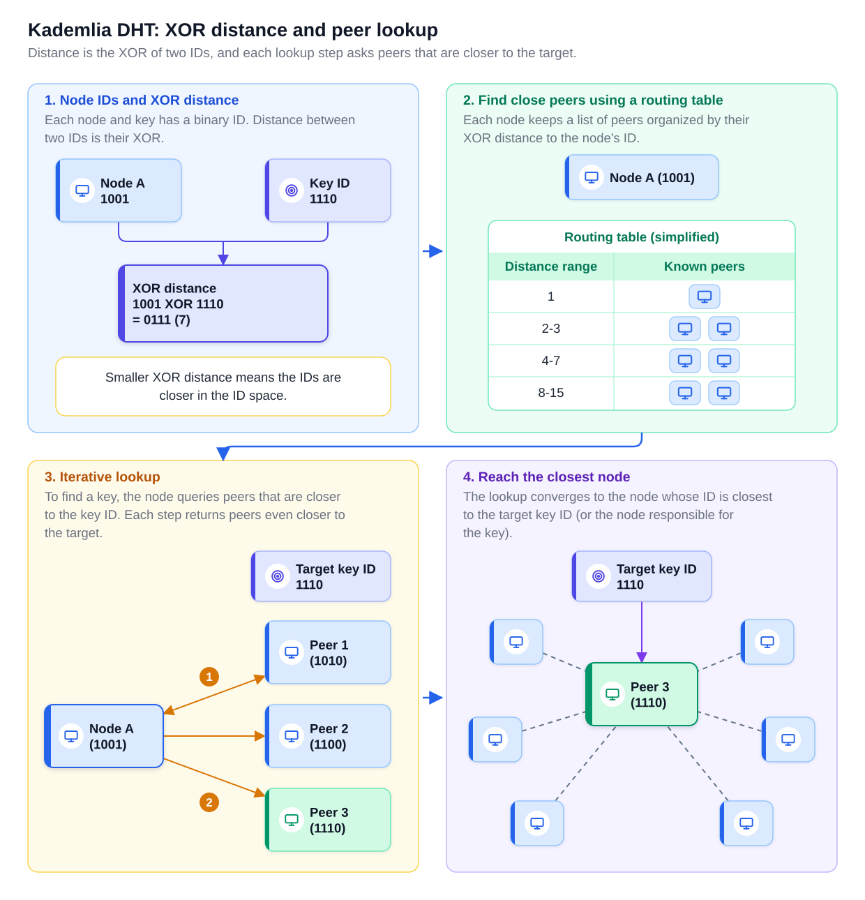
What a DHT Stores
Usually not the data itself. For large content, the DHT stores pointers: the key is a content hash, and the value is a list of peers that hold the content. The actual transfer then happens directly between peers. This keeps DHT entries small and lookup cheap, and it is exactly how BitTorrent's trackerless mode works.
Part 5: Data Transfer and Replication
Chunking and Parallel Download
Large files are split into pieces, and each piece is independently hashed so it can be verified on arrival.
A downloader requests different pieces from different peers simultaneously, which aggregates the upload bandwidth of many peers and removes the dependence on any single one.
A peer can start serving a piece as soon as it has verified it, so the swarm becomes useful to new arrivals long before any single peer has the whole file.
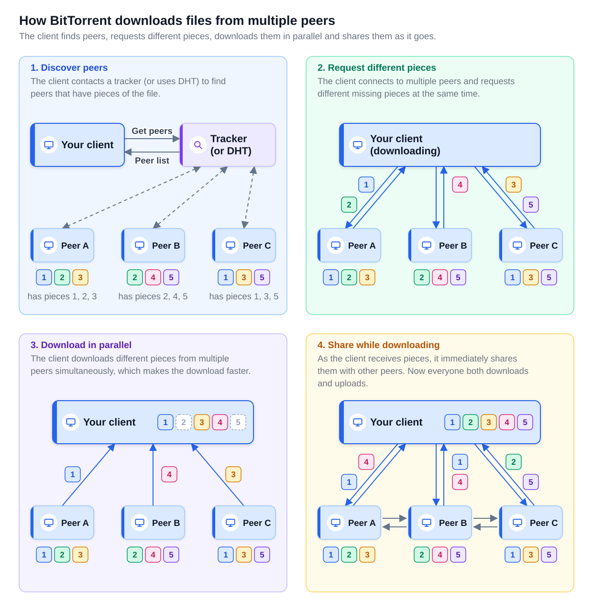
Piece Selection and Incentives
If every downloader chased the same piece, rare pieces could vanish when their holders leave.
BitTorrent uses a rarest-first policy: peers prefer to download the pieces the fewest neighbors have, which keeps all pieces well replicated across the swarm.
The harder problem is free riding.
A peer that downloads without uploading takes without giving.
BitTorrent addresses this with tit-for-tat choking: a peer uploads preferentially to peers that upload to it, plus one randomly chosen peer through optimistic unchoking to give newcomers a chance and discover better partners.
The result is a protocol where cooperation is usually the locally rational strategy, which is an incentive design rather than a technical enforcement.
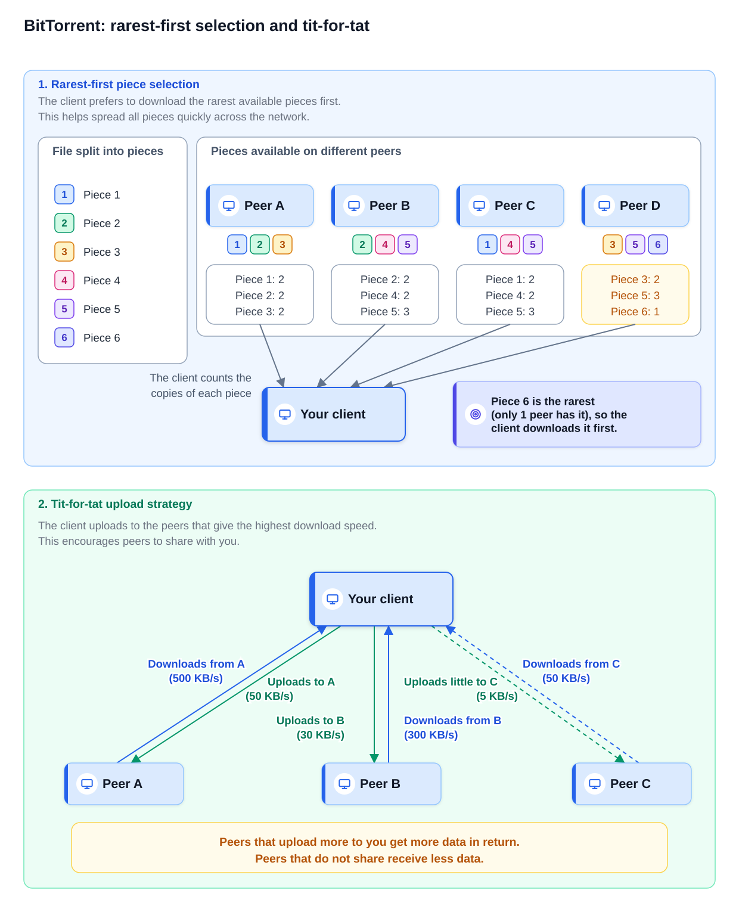
Replication Under Churn
Data stored on peers disappears when peers leave, so durable P2P storage must replicate.
One common approach stores each item on the k closest peers to its key in a DHT, with periodic republishing so that when one holder leaves, a replacement receives the data.
Another approach splits data into n fragments where any k of them reconstruct the original (erasure coding). Systems such as Storj and Sia use it because it gives better durability per byte stored than plain replication.
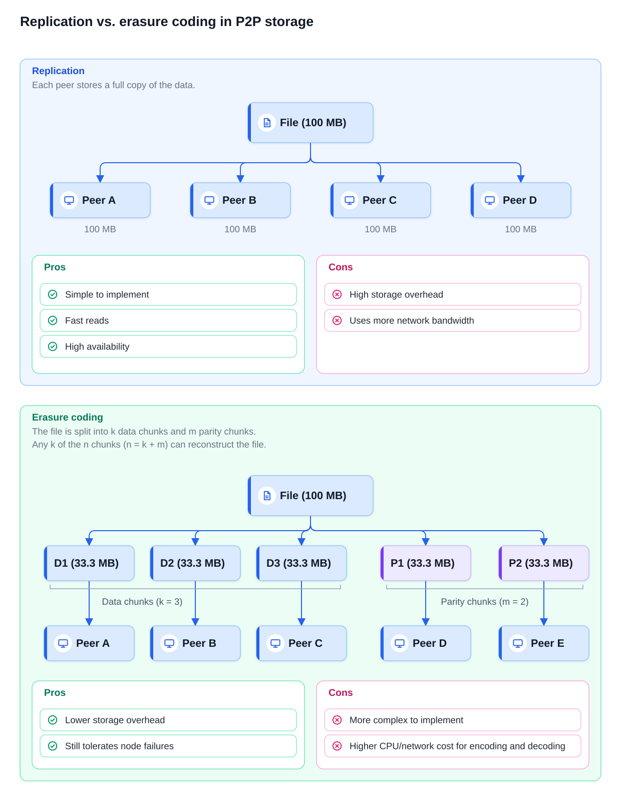
Part 6: Connectivity: NAT Traversal
Most peers sit behind home routers that use network address translation and do not accept unsolicited inbound connections. This is a practical barrier for a pattern that depends on peers connecting directly.
The standard toolkit works in escalating order.
STUN lets a peer discover its public address and port as seen from outside.
STUN does not tell a peer the other peer's address, so the two peers first exchange their public addresses through a signaling server, a small central service that passes connection details between them. UDP hole punching then has the two peers, behind different NATs, simultaneously send packets to each other's public addresses, which creates mappings in both NATs that let traffic through.
Interactive Connectivity Establishment (ICE) orchestrates trying the candidate paths in priority order. When direct connection is impossible, a TURN relay forwards traffic between peers, which works but costs bandwidth for whoever runs the relay. This often happens with a strict NAT that assigns a new public port for each destination (a symmetric NAT), because the other peer usually cannot predict which port to send to.
This is why even decentralized systems depend on some infrastructure: STUN servers, TURN relays, and bootstrap nodes. WebRTC, which powers browser-based P2P video and data channels, packages all of this.
In production, a minority of connections, often cited as 10 to 20 percent, fall back to relays. The real share varies widely with the mix of networks that users are on, and every relayed connection adds bandwidth cost for the relay operator.
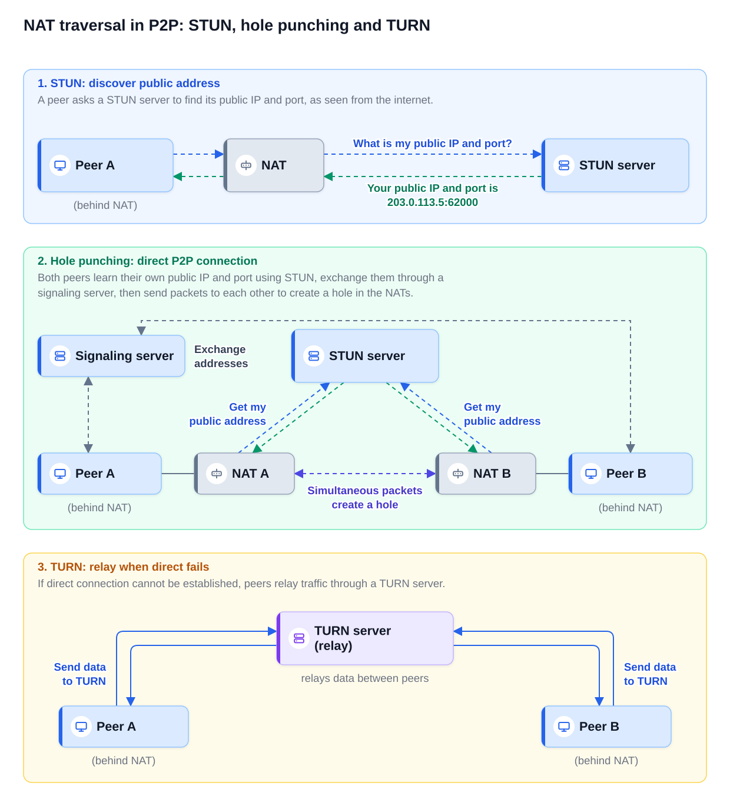
Part 7: Consistency, Trust, and Security
Consistency
With no central authority, agreeing on shared state is hard.
Most P2P file and content systems sidestep it by making data immutable and content addressed: the key is the hash of the content, so any peer can verify any copy, and there is nothing to keep consistent.
Mutable data is harder.
Systems typically use eventual consistency with versioning or conflict-free replicated data types (CRDTs), which let replicas merge concurrent updates deterministically.
When the system must agree on a single ordered history, as with a ledger, it needs a consensus protocol.
Bitcoin uses proof of work: mining peers compete to extend the chain, and the valid chain with the most accumulated work wins, without a coordinator. This rule is often loosely called the longest chain rule, but it counts total work rather than the number of blocks. Each block added on top makes an earlier block harder to reverse, so the guarantee that a block will stay in the chain (its finality) grows over time but is never absolute.
Other blockchains use proof of stake or classical Byzantine fault-tolerant protocols.
Consensus is expensive in latency and throughput compared to centralized databases, which is the cost of removing the trusted party.
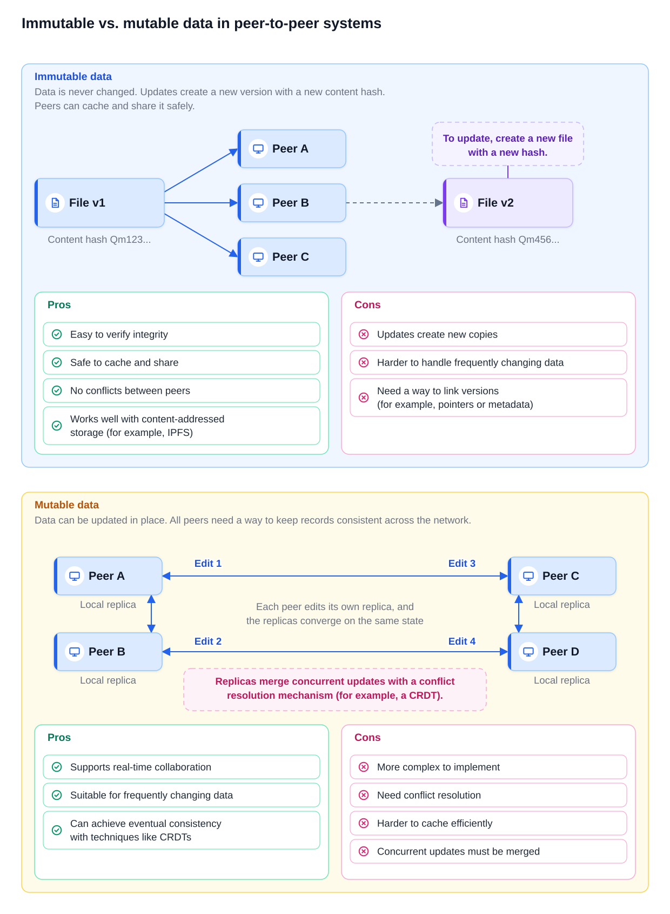
Threats Specific to P2P
Open membership means attackers can join freely, and several attacks follow.
-
Sybil attacks. One attacker creates many fake identities to gain disproportionate influence over routing or voting. Defenses include making identity costly (proof of work, stake, or admission control) or deriving node identifiers from resources that are hard to fake, such as IP address ranges.
-
Eclipse attacks. An attacker surrounds a victim peer with malicious neighbors so the victim sees a distorted view of the network. Defenses include diverse neighbor selection, limits on connections per IP range, and maintaining some long-lived connections.
-
Poisoning. Malicious peers serve corrupt data or false routing entries. Content addressing defeats data poisoning, since a bad chunk fails its hash check. Routing poisoning is mitigated by redundant lookups across multiple paths.
-
Privacy leakage. In public swarms, peers see each other's IP addresses, and observers can learn who is downloading what. Systems requiring anonymity send traffic through several encrypting relays, so that no single relay sees both the sender and the destination (onion routing).
The general lesson is that P2P designs must assume some fraction of peers are hostile and be correct anyway.
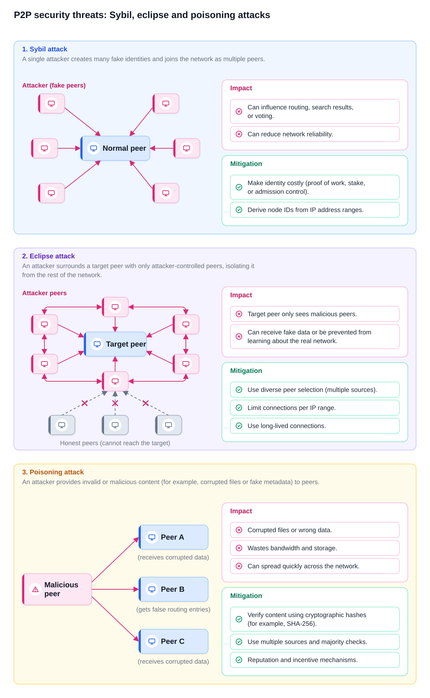
Part 8: Production Systems
-
BitTorrent. Distributes large files using chunking, rarest-first, tit-for-tat, and a Kademlia DHT for trackerless peer discovery. Companies, including some game publishers, have used it for patch distribution because it offloads origin bandwidth.
-
Bitcoin and Ethereum. Peers gossip transactions and blocks across a random overlay, validate everything independently, and agree on history through consensus. Many full nodes keep a complete copy of the ledger, which is extreme replication chosen for trust rather than efficiency.
-
IPFS. Content-addressed storage where data is located by its hash through a Kademlia DHT and exchanged through a block exchange protocol. Content addressing gives deduplication and verifiability without extra work, but content persists only while some node commits to keep storing and serving it (pinning).
-
WebRTC applications. Browser video calls and data channels connect peers directly where NAT traversal succeeds, with a signaling server to introduce peers and TURN as fallback. The signaling server is a small centralized component that makes the decentralized media path possible.
-
Hybrid use inside centralized systems. Spotify historically used peer assistance to reduce server load, and several video platforms use peer-assisted delivery. Cassandra, Dynamo, and Riak are not P2P in the user-facing sense, but their symmetric nodes, gossip membership, and consistent hashing ring are the techniques that structured P2P overlays use. Dynamo's designers even call it a zero-hop DHT, because each node can send a request straight to the key's owner. This is the most common way the pattern appears in production: not as a pure P2P system, but as the technique for making a cluster of equal nodes self-organizing.
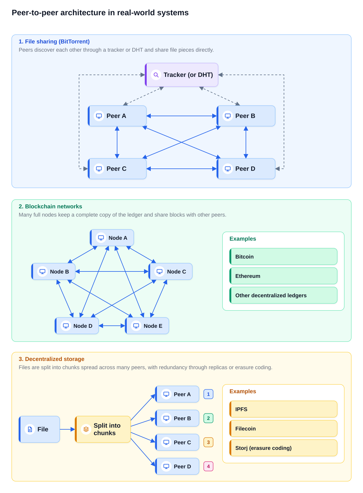
Part 9: Advantages and Limitations
Advantages
-
Scalability that grows with demand. Each new peer adds capacity, so popular content becomes cheaper per user to serve, not more expensive.
-
Resilience. No single failure stops the system. Survival depends on replication and the network's ability to repair, not on any one machine.
-
Lower operating cost for the originator. Bandwidth, storage, and compute are contributed by participants.
-
Censorship and takedown resistance. With no central party to pressure, shutting the system down means stopping many independent peers rather than one operator.
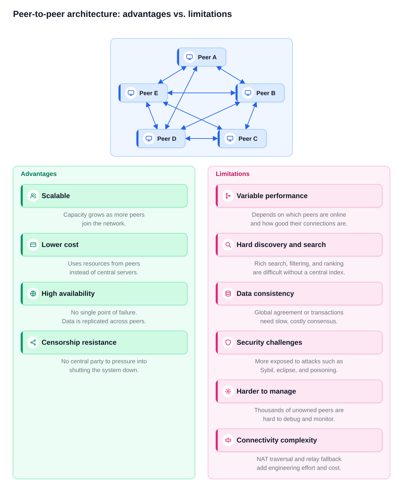
Limitations
-
Unpredictable performance. Throughput and latency depend on which peers happen to be online and how good their connections are. Guaranteeing an SLA is very hard.
-
Hard discovery and search. Exact-match lookup is solved by DHTs, but rich search, filtering, and ranking are difficult without a central index.
-
Weak consistency and coordination. Anything needing global agreement, transactions, or strong consistency requires consensus, which is slow and costly.
-
Security and trust. Open membership invites Sybil, eclipse, and poisoning attacks, and the system must tolerate them.
-
Operational opacity. Debugging a system with thousands of independent, unreliable, unowned nodes is harder than debugging a fleet you control. There is no dashboard for peers you do not run.
-
Connectivity complexity. NAT traversal and relay fallback add engineering effort and residual cost.
Part 10: When to Use It
Peer-to-peer is the right choice when distributing large, popular, immutable content where origin bandwidth cost would otherwise dominate, or when resistance to censorship or central control is itself a requirement. It also fits when participants naturally have resources to contribute, or when you need a leaderless cluster in which equal nodes organize themselves, as in Dynamo-style stores.
It is the wrong choice when you need strong consistency, predictable latency, rich querying, easy access control and revocation, or simple operations.
A banking system, a social feed, and an e-commerce checkout all want a trusted center, and forcing peer-to-peer onto them adds cost with no benefit.
A common mature answer is hybrid: a central service for identity, search, and coordination, with peer-to-peer used for the heavy data transfer path.
WebRTC with a signaling server and peer-assisted video delivery both follow this shape.
Skype shows the same move. Early Skype promoted well-connected user machines to superpeers that helped route calls, but Microsoft later replaced them with servers in its own data centers. The change followed the shift to mobile: phones make poor peers because of battery limits, NAT, and frequent sleep, and a central service gave Skype more reliable calls and more control.
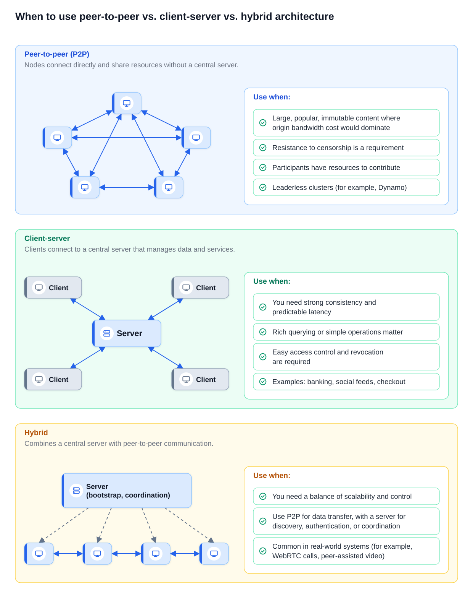
FAQs
Q: What is the difference between peer-to-peer and client-server?
In peer-to-peer, every participant both requests and provides, control is decentralized, and capacity grows as peers join. It scales cheaply for popular content and survives the loss of any node, but it is harder to search, secure, and reason about. The client-server side of the comparison, with its fixed and asymmetric roles, is covered in the Client-server Architecture lesson.
Q: How does a peer find content without a central index?
There are three main ways, drawn from the second and third generations. Flooding asks neighbors, who ask their neighbors, within a hop limit, which is robust but expensive. Superpeers index the content of nearby peers, which reduces traffic but reintroduces partial centralization. A DHT maps content keys to the peers responsible for them, so a lookup takes O(log N) hops deterministically. Modern systems overwhelmingly use DHTs for exact-match location of content identified by hash.
Q: What is a DHT and why does it need XOR or a ring?
A DHT is a hash table distributed across peers. To make lookup efficient, each peer needs a rule for which keys it owns and a routing table that gets any query closer to its target on every hop. A ring (Chord) or XOR metric (Kademlia) provides a notion of distance in the identifier space, so peers can always forward to someone closer. The exponential structure of routing tables lets each hop make large progress, giving logarithmic lookup with high probability. Without a distance metric, there is no way to know which neighbor is closer to the answer.
Q: How do P2P systems deal with peers leaving?
Through redundancy and repair. Data is stored on multiple peers, often the k closest to the key in a DHT, and republished periodically so that departures are replaced. Routing tables hold several contacts per bucket and prefer long-lived peers. Erasure coding provides durability with less storage overhead than full replication. Churn is the design constraint, not an edge case.
Q: Is blockchain a peer-to-peer architecture?
Its network layer is. Nodes connect in an overlay, gossip transactions and blocks, and each validates independently. What blockchain adds on top is a consensus protocol so that these equal peers agree on one ordered history, which the base pattern does not provide. So blockchain is peer-to-peer networking plus consensus plus replicated state. The cost is much lower throughput and much higher latency than a centralized database, in exchange for removing the trusted operator.
Q: How do you prevent free riders?
With incentives built into the protocol. BitTorrent's tit-for-tat has peers upload preferentially to those who upload to them, so contributing is usually the best way to get fast downloads. Other systems use reputation, credit or token mechanisms (Filecoin pays for storage, for example), or ratio enforcement in private communities. The principle is to make cooperation the locally best strategy, since you cannot force behavior on peers you do not control.
Q: Why do P2P systems still need some servers?
Four recurring reasons. Bootstrap: new peers need an initial contact, usually from DNS seeds or hard-coded nodes. Signaling: WebRTC peers need a server to exchange connection details. Relay: some NAT combinations cannot connect directly and need TURN relays. Persistence and availability: unpopular content disappears when its few holders leave unless someone, such as a pinning service, keeps it. These servers are generally used at the edges of the system rather than in its core operation, so the system as a whole keeps running if they briefly fail. The exceptions are the connections that need one at that moment, such as a call carried through a relay.
Q: How would you bring up peer-to-peer in a system design interview?
When the problem has very large, popular, static content with a high egress cost, such as software updates or video, propose peer-assisted delivery with a central origin as a fallback and a tracker or DHT for discovery. When asked about leaderless storage, describe consistent hashing with gossip membership and replication across successor nodes. State what you give up: strong consistency, predictable latency, and simple access control.
Key Takeaways
-
Peer-to-peer gives every participant both client and server roles. There is no privileged center, and capacity grows with the number of peers rather than with operator spending.
-
Churn is the defining constraint. Peers constantly join and leave, so replication, routing table repair, and incentives are core design elements, not add-ons.
-
The pattern evolved through three generations. Centralized index (Napster) was fast but fragile, unstructured flooding (Gnutella) was robust but did not scale, and structured overlays with DHTs gave deterministic O(log N) lookup.
-
DHTs like Chord and Kademlia locate keys without a central index. Peers and keys share one identifier space, each peer owns the keys nearest to it, and exponentially structured routing tables make every hop cover large distance.
-
Content addressing removes most consistency problems for immutable data. The key is the hash of the content, so any copy is verifiable by any peer. Mutable shared state needs CRDTs or consensus.
-
Incentives matter as much as protocols. BitTorrent's rarest-first and tit-for-tat policies keep pieces replicated and discourage free riding without any enforcement authority.
-
NAT traversal forces some infrastructure. STUN, hole punching, ICE, and TURN relays are the standard toolkit, and a noticeable share of connections still fall back to relays.
-
Open membership means designing for hostile peers. Sybil, eclipse, and poisoning attacks are mitigated through costly identities, diverse neighbors, redundant lookups, and hash verification.
-
Pure P2P is rare in product systems. The common production shape is hybrid: central services for identity, search, and coordination, with peers carrying the heavy data transfer, or cluster databases borrowing P2P techniques for self-organization.
-
The pattern fits large, popular, immutable content and leaderless clusters. Any design that uses it must name its discovery mechanism, its replication strategy, and its incentive or consensus model, and accept what it trades away: consistency, predictable performance, and simple control.
0 Comments
No comments yet. Be the first to start the discussion!
Reading Progress
0%
On This Page
Know the Vocabulary
Part 1: What the Pattern Is
The Definition
The Problem It Solves
Part 2: Core Concepts
Peers
The Overlay Network
Churn
The Bootstrap Problem
Part 3: The Three Generations of P2P
Generation 1: Centralized Index (Napster)
Generation 2: Unstructured Overlays (Gnutella)
Generation 3: Structured Overlays (Distributed Hash Tables)
Part 4: Distributed Hash Tables
The Core Idea
Chord: Routing on a Ring
Kademlia: Routing by XOR Distance
What a DHT Stores
Part 5: Data Transfer and Replication
Chunking and Parallel Download
Piece Selection and Incentives
Replication Under Churn
Part 6: Connectivity: NAT Traversal
Part 7: Consistency, Trust, and Security
Consistency
Threats Specific to P2P
Part 8: Production Systems
Part 9: Advantages and Limitations
Advantages
Limitations
Part 10: When to Use It
FAQs
Key Takeaways